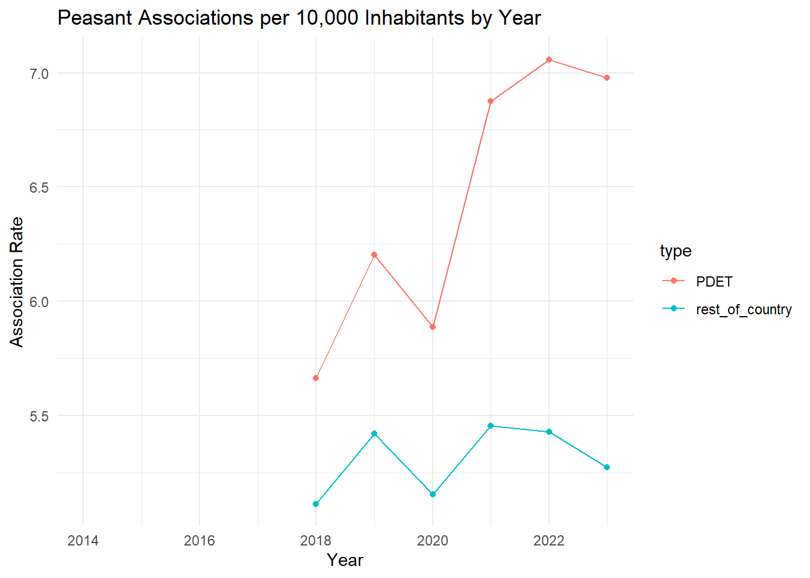

Quantitative Results: Collective Action and Violence Prevention
Overview
This section presents the quantitative findings from my dissertation, focusing on how agricultural cooperative membership and peasant associations relate to conflict-related victimization in rural Colombia. I use panel data (2016–2022) at the municipality level to examine long-term patterns of collective action and their association with violence.
The analysis includes a Between Effects regression model, which captures how average levels of cooperative membership across municipalities relate to average levels of victimization over time.
Victimization and Collective Action Trends (2016–2022)
library(readr)library(ggplot2)library(dplyr)
Attaching package: 'dplyr'
The following objects are masked from 'package:stats':
filter, lag
The following objects are masked from 'package:base':
intersect, setdiff, setequal, union
library(plm)
Attaching package: 'plm'
The following objects are masked from 'package:dplyr':
between, lag, lead
library(lmtest)
Loading required package: zoo
Attaching package: 'zoo'
The following objects are masked from 'package:base':
as.Date, as.Date.numeric
library(sandwich)library(stargazer)
Please cite as:
Hlavac, Marek (2022). stargazer: Well-Formatted Regression and Summary Statistics Tables.
R package version 5.2.3. https://CRAN.R-project.org/package=stargazer
Warning: One or more parsing issues, call `problems()` on your data frame for details,
e.g.:
dat <- vroom(...)
problems(dat)
Rows: 11189 Columns: 176
── Column specification ────────────────────────────────────────────────────────
Delimiter: ","
chr (16): MPIO, REGION_REGALIAS, CATEGORY_1, CATEGORY_2, state, province, m...
dbl (160): mun, year, population_municipality, MUNICIPALITY_YEAR, PDET_MUNIC...
ℹ Use `spec()` to retrieve the full column specification for this data.
ℹ Specify the column types or set `show_col_types = FALSE` to quiet this message.
# Calculate average victimization rate by year and typemean_rate_victims <- panel_data %>%group_by(year, type) %>%summarise(mean_rate_victims =mean(rate_victims, na.rm =TRUE))
`summarise()` has grouped output by 'year'. You can override using the
`.groups` argument.
# Plot 1: Victimization Rateggplot(mean_rate_victims, aes(x = year, y = mean_rate_victims, color = type)) +geom_line() +geom_point() +labs(title ="Rate of Victims per 10,000 Inhabitants by Year", x ="Year", y ="Victimization Rate") +theme_minimal()
Warning: Removed 2 rows containing missing values or values outside the scale range
(`geom_line()`).
Warning: Removed 2 rows containing missing values or values outside the scale range
(`geom_point()`).
`summarise()` has grouped output by 'year'. You can override using the
`.groups` argument.
ggplot(mean_rate_members, aes(x = year, y = mean_rate_members, color = type)) +geom_line() +geom_point() +labs(title ="Cooperative Members per 10,000 Inhabitants by Year", x ="Year", y ="Membership Rate") +theme_minimal()
Warning: Removed 4 rows containing missing values or values outside the scale range
(`geom_line()`).
Warning: Removed 4 rows containing missing values or values outside the scale range
(`geom_point()`).
`summarise()` has grouped output by 'year'. You can override using the
`.groups` argument.
ggplot(mean_rate_pa, aes(x = year, y = mean_rate_pa, color = type)) +geom_line() +geom_point() +labs(title ="Peasant Associations per 10,000 Inhabitants by Year", x ="Year", y ="Association Rate") +theme_minimal()
Warning: Removed 8 rows containing missing values or values outside the scale range
(`geom_line()`).
Warning: Removed 8 rows containing missing values or values outside the scale range
(`geom_point()`).

Between Effects Model Estimates
# Prepare datapanel_data1 <- panel_data %>%filter(year >=2016& year <=2021)panel_data2 <- panel_data %>%filter(year >=2018& year <=2022)panel_data1 <-pdata.frame(panel_data1, index =c("mun", "year"))panel_data2 <-pdata.frame(panel_data2, index =c("mun", "year"))panel_data1 <- panel_data1 %>%mutate(PDET =as.numeric(PDET))panel_data1_BE <- panel_data1 %>%group_by(mun) %>%summarise(PDET =first(PDET), across(where(is.numeric), mean, na.rm =TRUE))
Warning: There was 1 warning in `summarise()`.
ℹ In argument: `across(where(is.numeric), mean, na.rm = TRUE)`.
ℹ In group 1: `mun = 5001`.
Caused by warning:
! The `...` argument of `across()` is deprecated as of dplyr 1.1.0.
Supply arguments directly to `.fns` through an anonymous function instead.
# Previously
across(a:b, mean, na.rm = TRUE)
# Now
across(a:b, \(x) mean(x, na.rm = TRUE))